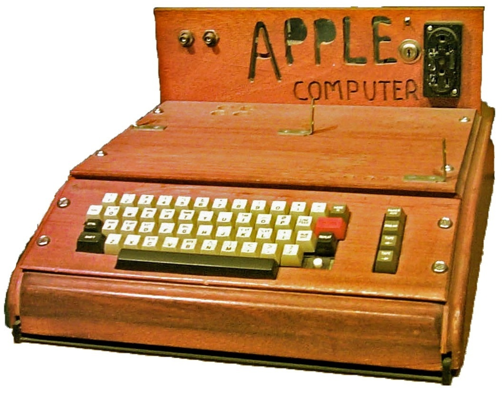
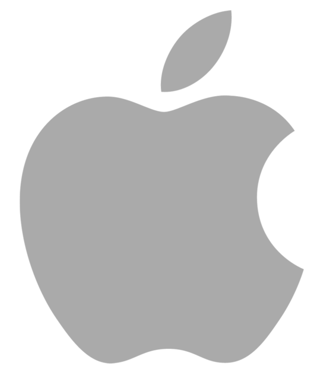

História da Apple
A empresa Apple foi fundada por Steve Jobs, Steve Wozniak, e Ronald Wayne na garagem dos pais de Jobs. Eles lançaram o Apple I, o primeiro computador pessoal da empresa.
O Apple II foi um grande sucesso de vendas, ajudando a estabelecer a Apple como uma potência na indústria de computadores pessoais, entretanto devido a algums conflitos Steve Jobs foi demitido da sua própia empresa em 1985.
Sem Steve Jobs, a Apple enfrentou dificuldades e perdeu participação de mercado para concorrentes. Houve uma série de produtos mal sucedidos e a empresa lutou para se manter relevante
Com a aquisição da NeXT, empresa fundada por Jobs após deixar a Apple, Steve Jobs retornou à Apple e assumiu a liderança. Isso marcou o início de uma reviravolta notável para a empresa.
sob o comando de Jobs, a Apple lançou uma série de produtos inovadores que transformaram indústrias inteiras. O iMac, iPod, iPhone e iPad foram especialmente influentes, redefinindo os padrões para computação pessoal, música digital, smartphones e tablets.
Atualmente a atual logo da marca Apple é uma maçã como diz o propio nome porém como todos sabem, essa maçã tem uma marca de mordida na sua lateral direita, como mostra a imagem a seguir
